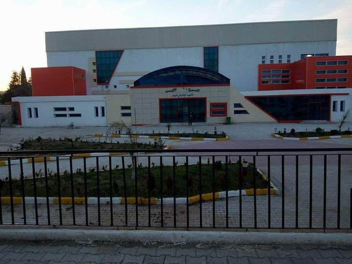

- El Affroun

تم افتتاح الملعب البلدي لمدينة العفرون سنة 1942 تحت اسم لوسيان أفيرسون .
بعد الاستقلال تم اعادة تسمية الملعب حيث حمل اسم الشهيد بن تركي جلول .
في سنة 2014 تم تدشين القاعة المتعددة الرياضات أحمد قبايلي ، مارس في هذه القاعة عدة جمعيات .
ر ياضية نشاطاتهم المختلفة ككرة السلة، كرة اليد، كرة الطائرة و الرياضات القتالية..
كما تحتوي هذه القاعة على قاعة خاصة بكمال الأجسام.
شهدت هذه القاعة تنظيم عدة بطولات ولائية و منافسات وطنية .
صفحة قاعة متعددة الرياضات قبايلي أحمد
يحتوي هذا المركب على قاعة كبيرة ذات أرضية مطاطية تساعد على ممارسة مختلف الرياضات، اضافة الى قاعات صغرى .
تساعد في الرياضات التي لا تحتاج الى مساحة كبرى .
يحتوي هذا المركب أيضا على ملعب صغير لممارسة كرة القدم .
لأكثر معلومات يمكنكم زيارة صفحة
المركب الرياضي الجواري
استفادة بلدية العفرون من مسبح شبه أولمبي و تم افتتاحه سنة 2016.
